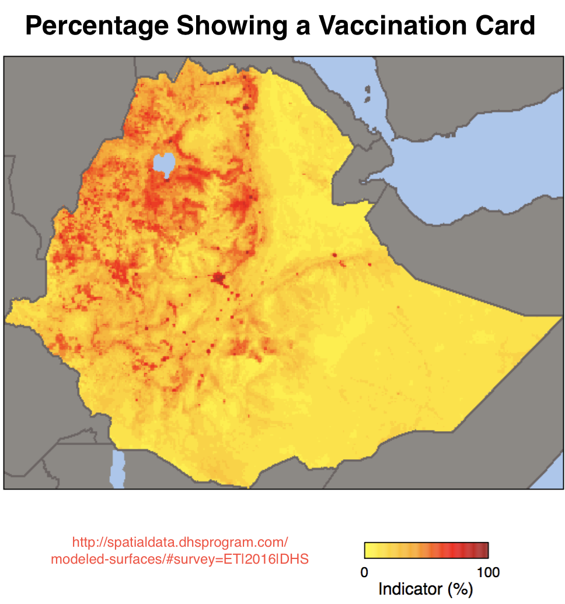

Mother’s Education the most significant differentiator in tracking Immunization Status in Ethiopia
|
Vaccination card is important in helping parents to keep a track of their children immunization status. In Ethiopia, vaccination card penetration rate varies moderately across – location and birth order and significantly across – residence: rural/ urban, mother’s education and family wealth. Interesting to note that, about 11.4% of children aged 12-23 months lose their vaccination cards regardless of social and economic status and this figure goes up to 17.6% for children aged 24-35 months.
|
 |
Children aged 12-23 Months Children aged 24-35 Months